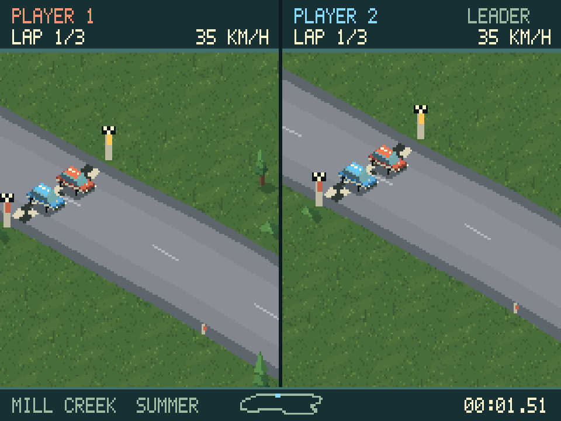
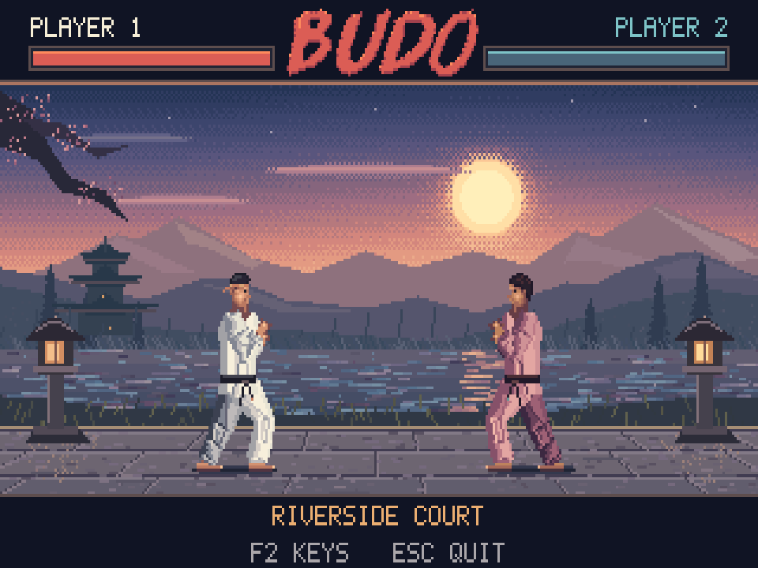

RALLY
Race a friend in split-screen VGA on one keyboard. Run three laps at Pine Ridge, Mill Creek, or Crown Pass in summer or winter. Watch for puddles, ice, and skid marks as the cars lose grip.
Extract the ZIP with the RALLY folder beside RALLY.EXE. Run RALLY on an MS-DOS PC or in an MS-DOS emulator. Player 1 uses W, A, S, D and Q. Player 2 uses the arrow keys and . (period). Press F10 to tune the physics.


BUDO
Face a friend in a local two-player karate match on one keyboard. Advance, retreat, and time your blocks and strikes in the Riverside Court.
Extract the ZIP with the BUDO folder beside BUDO.EXE. Run BUDO on an MS-DOS PC or in an MS-DOS emulator. Press F2 to remap either player's controls.


Dungeon Hero
Descend through five dungeons in a turn-based VGA adventure. Break the enemy’s guard, uncover the story carved into the ruins, and recover the crown.

In the dungeon


How to play
Extract the ZIP to a writable DOS directory, keeping the DUNGEON subdirectory beside DUNGEON.EXE. Run DUNGEON and press Enter to begin. Press F1 for the field guide or F10 to switch between English and Suomi.
Runs on an MS-DOS PC or in an MS-DOS emulator with VGA and 256 KB of free conventional memory. AdLib or Sound Blaster provides music and effects.